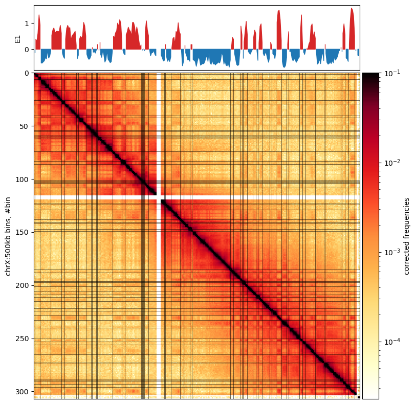

Project Progress Day: Msc. Project 2024
Correlating Chromatin Compartments with Selection
January 2, 2025
Reconstructing figures from (wang_reprogramming_2019?)
- (wang_reprogramming_2019?) identified compartments in rhesus macaque in five different stages of spermatogenesis:
- fibroblast, spermatogonia, pachytene spermatocyte, round spermatids, and sperm
- The edges of some compartments look suspiciously close to some of the regions of weirdly selected genes of papio anubis (olive baboons)

Check with the matrix
- As stated, we have to eyeball how well the E1 captures the plaid pattern
- How does it look?